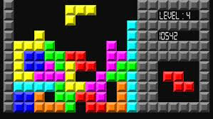

Galvosūkių Žaidimai
Galvosūkių žaidimai skatina mąstymą ir problemų sprendimo įgūdžius, dažnai pasiūlydami įvairius iššūkius ir užduotis, kurias žaidėjai turi išspręsti. Šie žaidimai gali būti tiek paprasti, tiek labai sudėtingi, ir dažnai turi daugybę lygių. Populiariausi galvosūkių žaidimai:
- Tetris - klasikinis galvosūkių žaidimas, kuriame žaidėjai turi rikiuoti krentančius blokelius taip, kad jie sudarytų pilnas eilutes.
- Portal - galvosūkių ir veiksmo žaidimas, kuriame žaidėjai naudoja portalus, kad išspręstų įvairias užduotis ir pabėgtų iš laboratorijos.
- Candy Crush - populiarus mobilusis žaidimas, kuriame žaidėjai turi sudėlioti trijų ar daugiau vienodų saldainių kombinacijas.
- The Witness - galvosūkių žaidimas atviro pasaulio aplinkoje, kuriame žaidėjai tyrinėja salą ir sprendžia įvairius galvosūkius, kad atskleistų jos paslaptis.
Galvosūkių žaidimai yra puikus būdas lavinti protą ir praleisti laiką smagiai. Jie gali būti labai įvairūs - nuo paprastų žaidimų iki sudėtingų ir įtraukiamų galvosūkių, kurie reikalauja daug mąstymo.